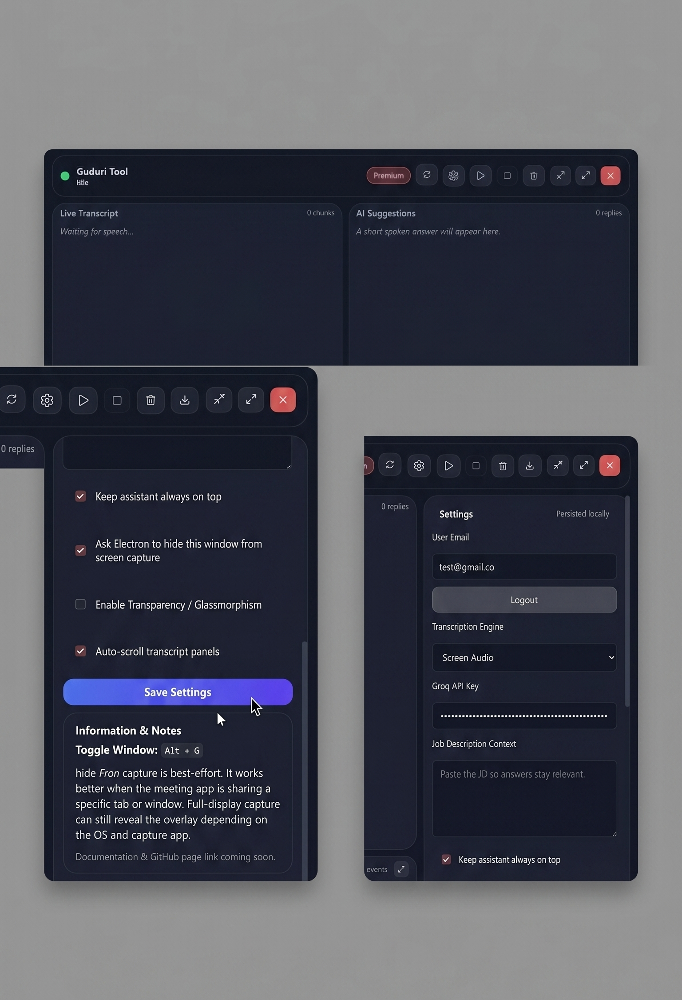
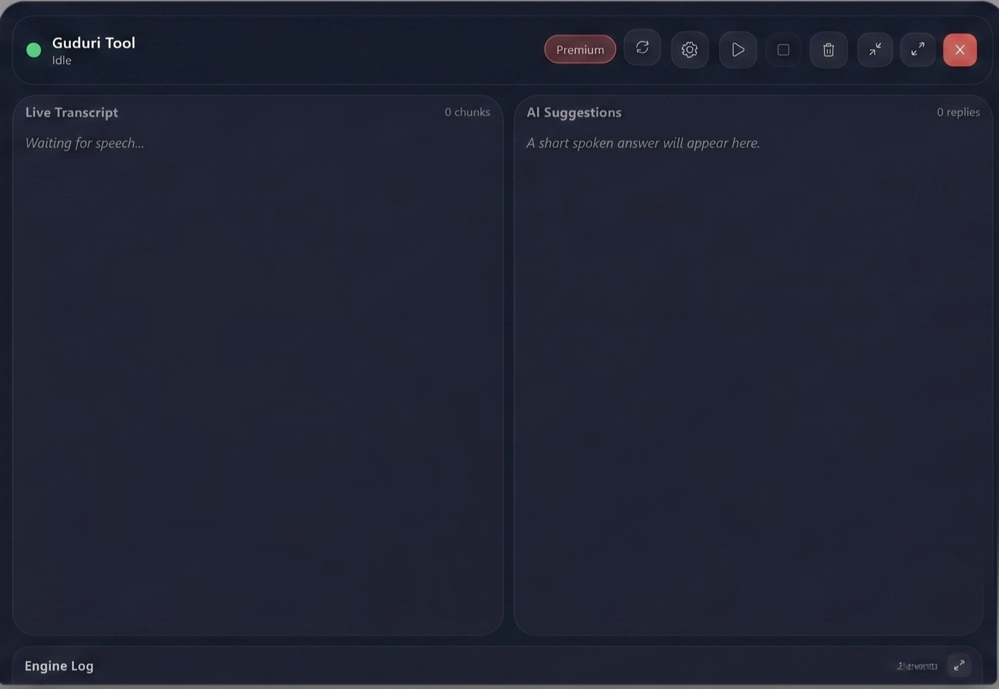

The Ultimate Stealth Interview Assistant
Real-time transcription + AI suggestions
DownloadPress Alt + G to toggle visibility

5-minute trial for free users. Premium users get unlimited access.
Paste Job Description for tailored answers.
Hide overlay during screen sharing (best-effort).
Add your Groq API key in settings.

Select engine → Click Play.
Clear or Export session anytime.
50ms RMS-based voice detection to reduce cost.
Removes noise and hallucinations.
No permanent storage. Data stays local.
Why no screen audio?
Windows only feature.
Upgrade?
Premium unlocks full access.
Detectable?
Stealth mode helps but not guaranteed.